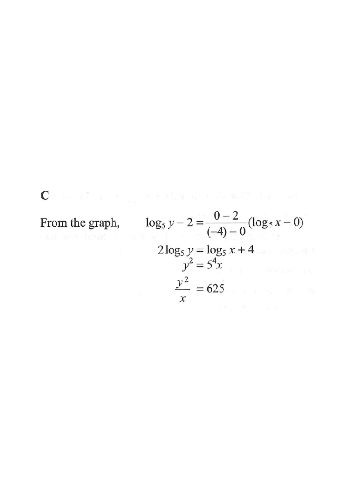

Straight line through (−4, 0) and (0, 2).
The graph in the figure shows the linear relation between $\log_5 x$ and $\log_5 y$. Which of the following must be true?

The line cuts the $\log_5 x$-axis at $-4$ and the $\log_5 y$-axis at $2$. So it passes through $\left(\log_5 x,\ \log_5 y\right)=(-4,\,0)$ and $(0,\,2)$.
Intercepts give you two exact points — always the fastest start.
$m=\dfrac{0-2}{(-4)-0}=\dfrac{-2}{-4}=\dfrac{1}{2}.$
Rise = −2, Run = −4 → slope is positive ½ (line goes up left‑to‑right).
Using point $(0,\,2)$ as the intercept:
$\log_5 y - 2=\dfrac{1}{2}\left(\log_5 x - 0\right)$
Point–slope form: $y-y_1=m(x-x_1)$ with $\log$ variables instead of $x,y$.
Multiply both sides by 2:
$2\log_5 y - 4=\log_5 x \quad\Longrightarrow\quad 2\log_5 y = \log_5 x + 4$
Isolate the two $\log_5$ terms to prepare for combining.
$2\log_5 y=\log_5 y^2$ (power law), and $\log_5 x + 4 = \log_5 x + \log_5 5^4=\log_5\!\left(5^4 x\right)$ (product law, since $\log_5 5^4=4$).
So $\log_5 y^2=\log_5\!\left(5^4x\right)$.
$4=\log_5 625$, so $5^4 = 625$.
Since $\log_5$ is one-to-one:
$y^2 = 5^4 x = 625x \quad\Longrightarrow\quad \dfrac{y^2}{x}=625.$
Equal logs with equal bases ⇒ equal arguments.
$\dfrac{y^2}{x}=625$ corresponds to option C.
Check: the slope ½ means the power of $y$ is twice the power of $x$. ✔